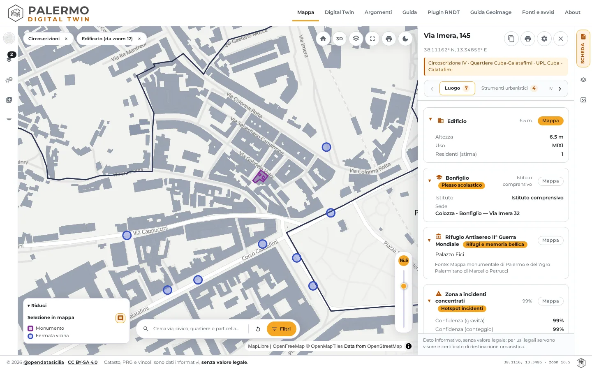
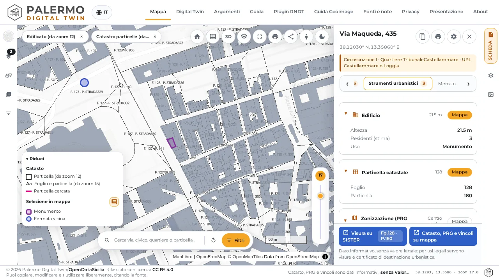
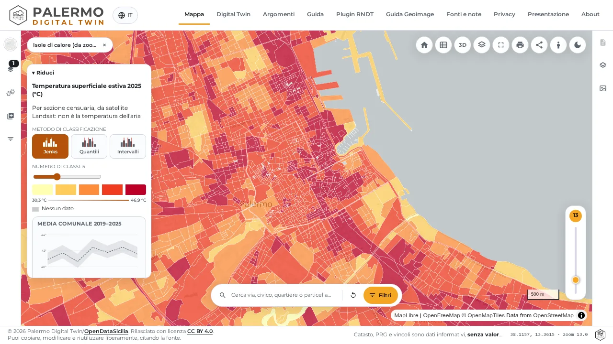
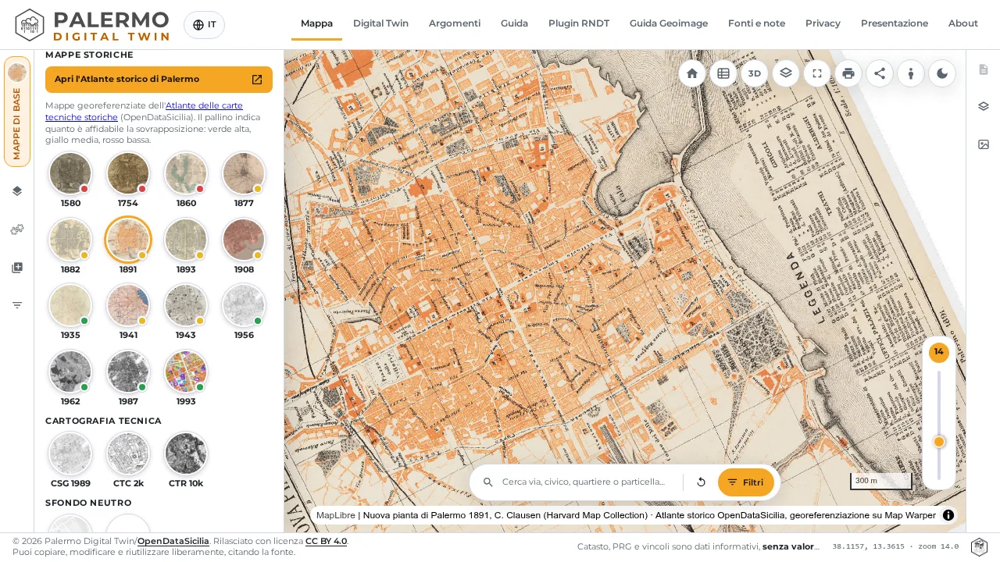
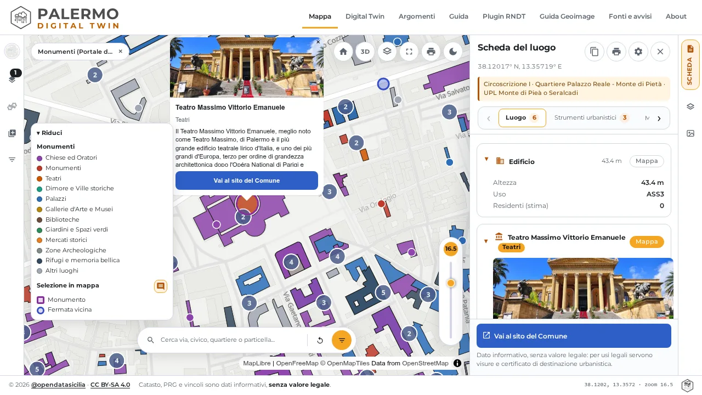
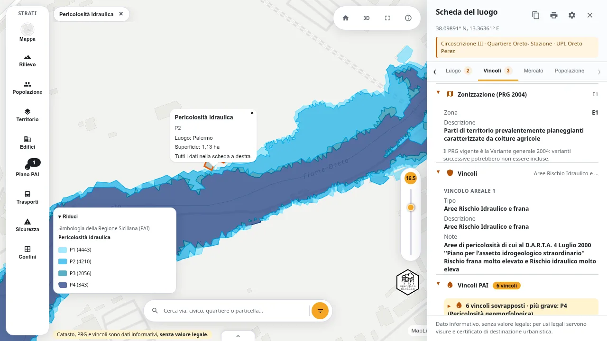
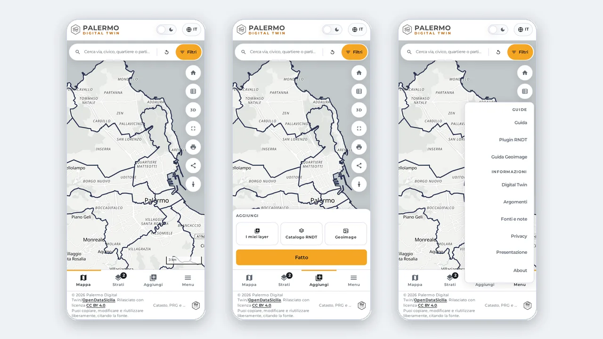

Palermo Digital Twin
La mappa dei dati aperti di Palermo: catasto, piano regolatore, popolazione, edifici, trasporto pubblico e molto altro.

Il tour dell'app
Tre video: la mappa, il plugin RNDT e Geoimage, passo dopo passo.
Cosa trovi sulla mappa
Ogni strato si accende o si spegne, e ogni clic apre la scheda del luogo.

Un clic, tutto su un punto
Catasto, vincoli, sicurezza, cultura e trasporti per l'indirizzo che scegli, riuniti in una sola scheda.

Isole di calore
La temperatura superficiale estiva di ogni sezione censuaria, dal 2019 al 2025.

Mappe storiche
Sovrapponi e confronta le piante antiche di Palermo con la città di oggi.

Monumenti e cultura
Chiese, palazzi, teatri e musei, con foto e collegamento al sito del Comune.

Rischio idrogeologico
I vincoli del Piano di Assetto Idrogeologico: pericolosità e rischio idraulico e geomorfologico.
Funziona anche su smartphone e tablet
Quattro tab in basso: Mappa, Strati, Aggiungi e Menu. La ricerca sta in alto e la scheda sale dal basso.
Leggi la guida
Dati aperti, con le fonti
I dati arrivano da fonti aperte: Comune di Palermo, AMAT, Trenitalia e RFI, AMAP Spa, Agenzia delle Entrate, ISTAT, Regione Siciliana e OpenStreetMap.
Per ogni fonte trovi la data, il collegamento al dato originale e la licenza.
Perché una nuova mappa, se c'è già PalermoHub?
La domanda è legittima, e ce la siamo fatta anche da soli. PalermoHub esiste da anni e raccoglie centinaia di mappe su Palermo e sulla Sicilia, e qualcuna anche nazionale. Che bisogno c'è di costruire altro?
La risposta breve è: PalermoHub e Palermo Digital Twin non fanno lo stesso mestiere. Uno è una biblioteca, l'altro è un tavolo di lavoro. E il tavolo di lavoro si serve dagli scaffali della biblioteca. Tutti i dati del Digital Twin provengono da PalermoHub.
PalermoHub, la biblioteca delle mappe
PalermoHub è un contenitore. Ogni mappa è un lavoro a sé, con il suo tema, la sua fonte, il suo autore, il suo anno. Si entra, si cerca per categoria, territorio, fonte o tag, si sceglie una mappa e la si apre. Poi si torna alla biblioteca e se ne sceglie un'altra.
Funziona benissimo quando la domanda è: «Esiste una mappa su questo tema?»
Lo scopo è mostrare quante cose si possono raccontare con i dati aperti e rendere comprensibile ciò che altrimenti resterebbe sepolto in documenti tecnici e portali poco amichevoli.
Il limite è strutturale: ogni mappa vive da sola. Per sapere cosa succede in un punto preciso della città (che particella catastale è, che zona del PRG, se ci sono vincoli idrogeologici, quanto fa caldo d'estate) bisogna aprire più mappe, in più schede, e confrontare i risultati a mano.
Palermo Digital Twin, tutto su un punto
Palermo Digital Twin parte dalla domanda opposta: «Cosa c'è qui?»
Invece di tante mappe separate c'è una sola mappa con tanti strati che si accendono e si spengono: catasto, piano regolatore, popolazione, edifici, rilievo, trasporto pubblico, isole di calore, rischio idrogeologico, monumenti, mappe storiche, uffici comunali e tanto altro. Un clic su un punto e si apre la scheda del luogo, che riunisce catasto, vincoli, sicurezza, cultura e trasporti per quell'indirizzo.
Ma c'è di più: il Digital Twin non serve solo a guardare, serve a lavorare.
Le differenze, in sintesi
| Aspetto | PalermoHub | Palermo Digital Twin |
|---|---|---|
| Idea | Catalogo di mappe tematiche | Un'unica mappa integrata della città |
| Domanda a cui risponde | «Che mappe esistono su questo tema?» | «Cosa c'è in questo punto?» |
| Struttura | Una mappa = un'applicazione a sé | Tanti strati combinabili nella stessa vista |
| Punto di ingresso | Ricerca e filtri (categoria, fonte, autore, anno, tag) | La mappa stessa: si cerca un indirizzo e si clicca |
| Lettura dei dati | Un tema alla volta | Più temi sovrapposti, con scheda riassuntiva del luogo |
| Dati propri e servizi | Non previsti | Caricamento di file (GeoJSON, KML/KMZ, GPX, Shapefile .zip, CSV con coordinate) e collegamento a servizi WMS, WMTS, WFS, XYZ, REST e Google Sheets, come in QGIS |
| Street View | No | Integrato, senza aprire altre finestre |
| Download | Dipende dalla singola mappa | Dati dei layer visibili scaricabili in vari formati |
| Strumenti | Visualizzare e consultare | Consultare, filtrare, aggiungere dati, vista 3D, plugin RNDT, Geoimage |
| Uso da telefono | Sito responsive | Interfaccia pensata per il telefono (tab Mappa, Strati, Aggiungi, Menu) |
| Fonti | Indicate mappa per mappa | Pagina dedicata con data, collegamento all'originale e licenza per ogni fonte |
Perché non unire le due cose?
Perché servono a scopi diversi, e ciascuna funziona meglio così.
PalermoHub resta lo spazio dove sperimentare, raccontare un tema, pubblicare una mappa nuova senza doverla incastrare in un sistema più grande.
Il Digital Twin è il punto in cui i dati si incontrano, dove una mappa smette di essere un'immagine da guardare e diventa uno strumento per rispondere a domande concrete su un luogo.
Le due cose si alimentano a vicenda: ogni nuova mappa pubblicata su PalermoHub può diventare uno strato del Digital Twin, e ogni strato del Digital Twin ha alle spalle un lavoro già pubblicato e documentato.
Collabora e segnala
Hai trovato un errore nei dati o qualcosa che non funziona? Hai un'idea per migliorare il sito? Segnalalo aprendo una issue su GitHub (basta un account gratuito). Anche chi vuole contribuire con dati, correzioni o codice è il benvenuto.